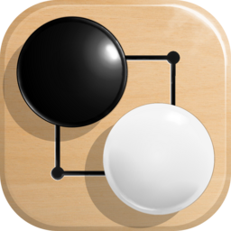

Last updated: 28 August 2026
Simple Go is a Go (Baduk) board game for Android, published by ablweb. This
policy covers the app distributed as com.ablweb.simplego.
Nothing. Simple Go collects no personal data, creates no account, and shows no ads. It contains no analytics, tracking, or crash reporting software.
Nothing. The app does not request Android's internet permission, so it is unable to send data anywhere. It works entirely offline, including the computer opponent, which runs on your device.
The app saves your settings (board size, handicap, komi, theme, opponent options) and your current game, so they are still there next time you open it. This stays on your device, is not readable by other apps, and is deleted when you uninstall Simple Go.
The app also reads the device's rotation sensor, if present, purely to move a highlight on the wooden board. Those readings are used to draw the current frame and are never stored or transmitted.
Simple Go is suitable for all ages. Since it collects no data at all, it collects none from children either.
If this policy changes, the updated version will be posted on this page with a new date.
Questions about this policy: ablweb.contactdev@gmail.com